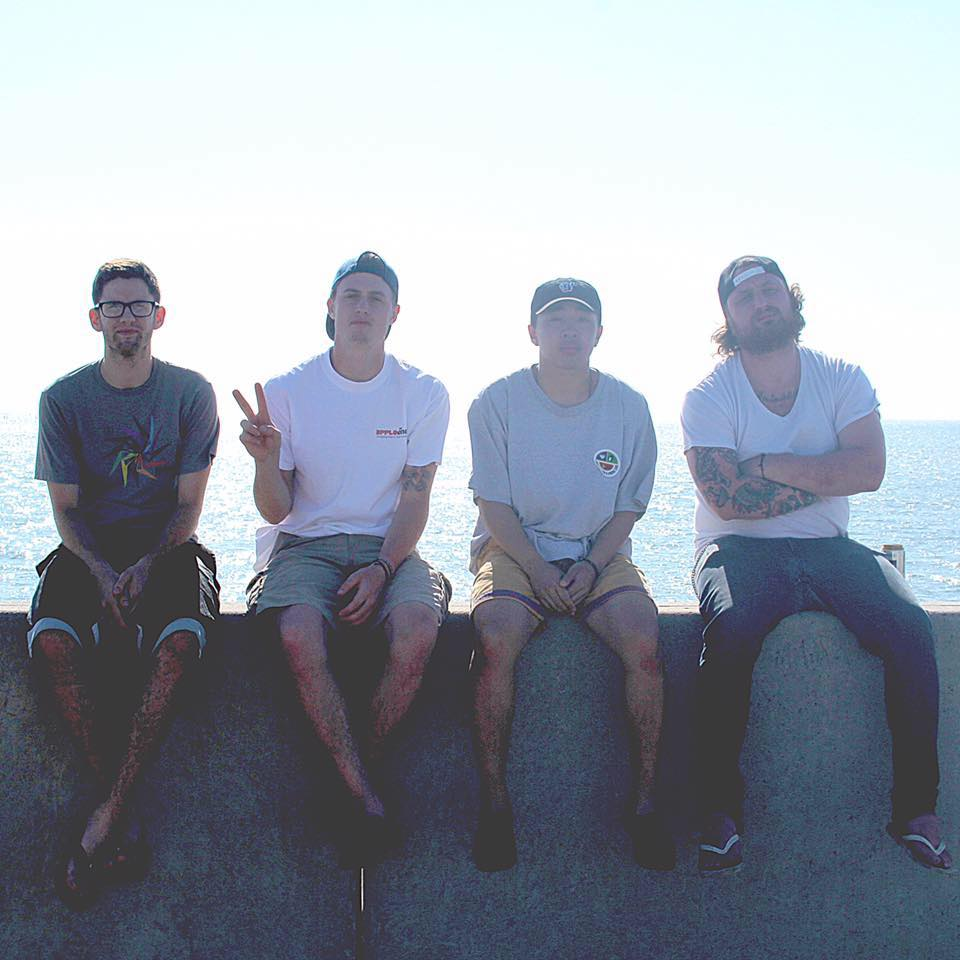
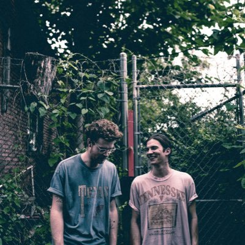
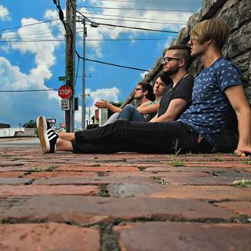

SANCTUARY SESSIONS
Our goal is to bring the concert experience to your phone, bring the show experience to your computer, bring everything but the beer soaked floor to wherever you are.
We produce live sessions, created by great bands, in order to support local music scenes all over - starting in Nashville, TN.
Backpacks
Backpacks is a four-piece alternative/punk band from Grand Rapids, Michigan. Since their beginning in 2014, the band have worked to develop their sound into something unique and completely their own. Following the release of their second EP, “Still Life” on Save Your Generation Records, the band began to receive attention from listeners outside of their local scene. Backpacks have recently announced the re-release of “Still Life” in the UK and Europe via Dirty Sushi Records and have plans to release plenty of new music before the end of 2016.
Mountains Like Wax
Murfreesboro, TN based band Mountains Like Wax is satisfying hungry fans one show at a time with their relentlessly poignant and exuberant Southern post-rock. Having played over fifty plus shows in the past year and counting without a sound recording, they are proving to be a band to watch as they charge to the forefront of Middle Tennessee’s burgeoning indie rock scene. Mitchell Taylor (vocals, guitar), Samuel Katz (guitar), and Preston Vaughn (drums) are now ready to commit their sound to tape and make a rallying cry for their generation as they wrap arms around those begging to know will the future render glory, will it be pliable, or will it melt and fade?
The Touch
We are a Nashville, TN based Dark Synth Pop ensemble. Our sound came about when vocalist Billy Blackman put his head together with Matt Ray and his analogue synthesizers. What came about was a collective of soundscapes that fit a dark setting, while still maintaining elements of dance, pop, and progressive music. When paired with the articulate push of Trey Blackman’s bass and the bombastic drumming of Matt McPeak, The Touch was born. Each track, theme, and lyric presented by The Touch is an original idea fabricated by the marriage of our minds. Feel the music just as much as you hear it.
Your band here!
Behold my excellent sales pitch. This could be you!